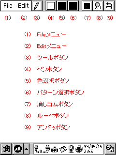

JINZO PAINT (4階調グレー版)は、WindowsCE で動作する、ペイント系のお絵描きツールです。
基本的な描画、カットアンドペースト、ルーペ、塗りつぶし、直線・矩形・楕円描画、セーブ/ ロード機能に
加えて、強力な色演算機能を搭載しています。
扱えるデータは、実画面サイズの4階調データのみです。
作者の環境での開発および動作確認は、CASSIOPEIA E-55 および Jornada720 で行っています。
インストールの場合は、JZPaint.exe を WindowsCE の任意のフォルダにコピーしてください。
アンインストールの場合は、JZPaint.exe を WindowsCE から削除してください。
レジストリに対する操作は、本プログラムでは行っていません。
|  |
上図が、JINZO Paint の画面です。スタイラスペンで、中央の白い部分に絵を描くことが出来ます。
サイズは実画面サイズで、PsPCではタスクバー表示状態で 240 x 270 ピクセルです。
上部メニューバーで、機能を切り替えることが出来ます。
プルダウンメニューで、以下の機能を使用できます。
Tillanosoftさん作のtGetFile.dllに対応していますので、 PsPC、PocketPC、PocketPostPetの場合はtGetFile.dllをインストールすることにより 操作性の向上が期待できます。
プルダウンメニューで、以下の機能を使用できます。
プルダウンメニューで、以下のツールを選択できます。
(4)を押すことで、ペンのサイズを変更できます。
(5)を押すことで、ペンの色を変更できます。
(6)を押すことで、ペンのパターンを変更できます。
ペンのスタイルは、100%, 87.5%, 75%, 62.5%, 50%, 37.5%, 25%, 12.5%, カスタムトーン の9種類が有ります。
密度が100%未満の場合は所々間引かれていますが、間引かれたドットは背景色（BackGround Colorダイアログで指定した色）となります。（上図（上）は背景色＝無色(None)）
上図(下）は75%と25%の上に50%で描いたものですが、密度の大きいスタイルの上に密度の小さいスタイルで描いても、密度は元の大きい密度のままとなります。
Reverse を選択すると、パターンが反転します。
カスタムトーンは、Load CustomToneコマンドで指定された画像データの左上16x16ピクセルのパターンを２値のスタイルとして使用します。この画像データはJINZO Paintで描画・セーブしたものが使用可能です。
(7)を押すことで、消しゴムのサイズを変更できます。
消しゴムは、色＝白、パターン＝100%です。
消しゴムを選択した時の直前のペンのサイズ、色、スタイルの設定は残るため、再度ペンボタン押す、またはツールボタンから Pen を選択することでその設定から描画を再開できます。
ルーペモードにより、拡大イメージでの編集が可能です。
拡大率は、1倍(通常)、2倍、3倍、4倍、8倍から設定出来ます。
1倍以外の場合は、x1view をチェックすることで左上に原寸イメージが表示されます。
原寸表示指定は各倍率で個別に保存され、起動時は2倍は非表示、3,4,8倍は表示となっています。
Handツール、またはカーソルキーでスクロールできます。また、1倍ではスクロール座標は原点に戻ります。
各種の描画に対して、１回の取り消しが出来ます。
ペン描画時の背景色を設定します。
Editメニューから BackGround Color を選ぶと、上図のダイアログが開きます。
透明色および黒,濃,薄,白のラジオボタンがあります。パターンが100%以下の場合、ここで指定した色が背景色となります。
上図は(上)背景色＝無色、上図(下)は背景色＝薄での描画例です。
表示中の ClipBoard データに対する、色の変換を設定します。
編集から Color Convert を選ぶと、上図のダイアログが開きます。
上から黒,濃,薄,白と4つの描画色があり、それぞれに4つの変換色に対するラジオボタンがあります。
上図では、黒→黒、濃→白、薄→濃、白→白に設定しています。
ここで、例を見てください。
アタリ（下絵）を描く例です。
描画色と元画像の色の関係を設定します。
Editメニューから色オプションを選ぶと、上図のダイアログが開きます。
上から黒,濃,薄,白と4つの描画色があり、それぞれに4つの元画像の色に対するチェックボックスがあります。上図では、描画色＝濃では背景色＝黒はチェックされておらず、元画像の色＝薄、白はチェックされています。
ここで、例を見てください。
黒・薄の上に濃で描画した場合ですが、通常では上のように黒・薄の上に濃で描画してしまいます。しかし、色オプションで、描画色＝濃に対して元画像の色＝薄に対するチェックを外すと、下のように薄には描画を行いません。
このように、元画像の色に対して描画色で描画を行う/行わないを自由に設定することが出来ます。
さらに、色演算機能の便利な使用方法をいくつか紹介します。
(i) 黒の輪郭線に、色を塗る例です。
上図(上)の輪郭線に色を塗る場合、色オプションで描画色＝濃・薄で元画像の色＝黒のチェックを外しておくと、
輪郭線はそのままで色を塗ることが出来ます。
(ii) 薄で影を付けた上に、濃で2段影をつける例です。
色オプションを設定しないと、左下のように黒や白の上にも濃を塗ってしまうため、修正が面倒です。
色オプションで、描画色＝濃で元画像の色＝黒・白はチェックを外し、薄にだけチェックをしておくと、黒・白に対しては描画を行わず薄にだけ描画を行うので、はみ出す心配なく濃を描くことが出来ます。
パソコンとのデータのやり取りでの注意事項です。
WindowsCEの扱う4階調データは2bpフォーマットというBMPの一種です。2bpでは4つの24ビットパレットデータを格納しています。
CEサービスでbmp⇔2bpの変換（と転送）を行う際には、以下のパレットデータが埋め込まれている必要があります。本プログラムでは、このデータを採用しています。
| 黒 | { 0x00, 0x00, 0x00 } |
| 濃 | { 0x80, 0x80, 0x80 } |
| 薄 | { 0xC0, 0xC0, 0xC0 } |
| 白 | { 0xFF, 0xFF, 0xFF } |
ただし、一部のアプリケーションでは、2bpやbmpに以下のようなパレットデータを埋め込んでしまいます。
| 黒 | { 0x00, 0x00, 0x00 } |
| 濃 | { 0x55, 0x55, 0x55 } |
| 薄 | { 0xAA, 0xAA, 0xAA } |
| 白 | { 0xFF, 0xFF, 0xFF } |
これらのデータをCEサービスで変換転送した場合、変換が正しく行われず、色化けなどが起こってしまうことがあります。これはCEサービスの不備と言ってもいいと思います。
本プログラムとCEサービスの間だけでデータをやり取りするだけであれば問題ないのですが、前述の異なるパレットデータを埋め込むアプリケーションとでやり取りをした場合、画像データが正常に扱えなくなります。
当方ではこれに対する解決方法をまだ確立できていません。バイナリエディタで書き換えることで対処しているのが現状です。スマートな解決方法がありましたら、御連絡ください。
以下に、本プログラムの注意事項を示します。
ver1.0→1.00a
ver1.00a→1.1
ver1.1→1.12
ver1.12→1.13
ver1.13→1.14
ご意見、御感想などがありましたら、作者までお願いします。
名前：上野 智弘
e-mail：t-ueno@mtc.biglobe.ne.jp
ホームページ：Tomohiro Ueno HomePage
このプログラム作成にあたり、以下の方々にお世話になりました。
このドキュメントの画面キャプチャ画像は、CaptCEにて取り込みました。また、画面キャプチャ画像の赤色文字は説明のために、別途書き足したものです。